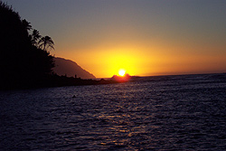
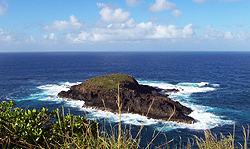

Noel sur l'île du film "Jurassic Park"
| Cinéma gratuit sur la plage |
Me re-voici, pour la suite de mes aventures hawaiiennes. Nous sommes maintenant samedi le 28 décembre et nous sommes de retour chez Steph à Waikiki. Après avoir écris mon dernier e-mail, finalement je ne suis pas allé au resto grec avec les autres mais je suis plutôt resté au centre-ville de Waikiki, étant donné qu'il y avait pas mal d'action et que ca m'aurais fait une bonne rail de vélo pour rejoindre les autres et de plus j'étais déjà en retard. Il y avait des films projetés dehors sur la plage et l'ambiance était bonne. Je me suis promené dans le centre-ville et j'ai arreté pour manger dans un resto japonais typique. Tout était écris en japonais pis la serveuse avait de la misère à parler anglais, mais c'est ca qui est le fun, ca ajoute au trip du voyage, je me serait crû au japon pendant une heure ou deux. Les gens autour étaient tous japonais et y'a 2 filles qui m'ont donné des petits trucs car j'avait de la misère avec mes baguettes. Elles parlaient pas anglais mais elle hochaient la tete quand je faisait quelque chose dans le bon sens. C'est tu cute. Ce fut délicieux et ainsi se termina cette soirée au Japon.
| Arrivée à Kaua'i vue de l'avion |
Le lendemain c'était le départ en avion vers l'île de Kaua'i. C'est sur cette île que plusieurs films ont été tournés dont le parc jurassique et indiana jones et le temple maudit. Quand on arrive en avion on comprends vite pourquoi et on reconnaît bien le décor si on a déjà vu le film Jurrassic park. On dirait que l'île est protégée par d'immenses murs naturels. C'est assez impressionnant. Je pense déjà aux marches qu'on va se taper sur le bord de ces précipices et j'en ai le vertige. J'en ai peut-être pas parlé dans mes derniers courriels, mais j'ai parfois un malaise quand je me trouve sur un petit chemin très étroit et que c'est le précipice au bas. Ca m'as pris un peu quand on étais allés escalader les montagnes sur l'ile de Steph (Ohau) mais ca s'est vite passé car les chemins étroits sont peu nombreux, et même si le précipice était haut il y avait quelques arbres auxquels on pouvait s'accrocher, au cas ou j'aurais la malchance de glisser. Mais maintenant je ne savais pas ce qui m'attendait sur l'île de Kaua'i, car nous allions marcher sur le bord des ces immenses falaises. Je suis un peu gêné de l'admettre, mais je n'ai pas fait la première marche jusqu'au bout car j'ai pogné la chienne totale. Le chemin était super étroit à plusieurs endroits et en bas c'était la falaise, et my god, c'était haut!!
| Un "Néné" |
| Une petite famille complète! |
On voyait l'océan au bas avec l'eau qui fracassait les rochers, c'était assez débile. Mais bon, avant tout cela nous avons visité un ancien phare ou se tiennent des espèces d'oiseaux rares, tel le Néné. C'est un oiseau natif d'Hawaii typique de la région ici. Ca ressemble à un canard mais c'est encore plus beau. Le paysage vu du phare est époustouflant. J'ai pris des tonnes de photos mais je vais me contenter d'insérer ici les plus impressionnantes. Nous sommes ensuite allés installer notre matériel de camping, sur une jolie plage qui se nomme "secret" beach. Elle n'est plus tellement secrète car il y a beaucoup d'autres campeurs sur place mais c'est tout de même une magnifique petite plage tranquille, l'eau est encore une fois claire comme c'est pas possible et y'a beaucoup de poissons. Là j'oublie sûrement pleins de trucs qu'on a fait mais c'est parce que ca fait déjà plusieurs jours et ma mémoire en souffre. Nous avons arrêtés à plusieurs endroit pour admirer divers paysages et parmi ceux-ci quelques chûtes d'eau paradisiaques. Nous sommes donc allés faire cette fameuse marche que je n'ai pas complétée et quand je suis revenu sur mes pas, je me suis simplement baigné dans l'océan en attendant les autres. Il y avait une superbe petite plage au bas des montagnes et j'en ai profité pour y relaxer. Il n'y avait pas trop de monde et y'a un chien qui est apparu de nulle part avec une balle de tennis dans la bouche. Je me suis amusé à lui lancer dans l'eau et il nagait pour aller la chercher. Y'avait l'air d'aimer ca. Ensuite on a eu droit à un magnifique coucher de soleil avec d'énormes vagues qui passait devant.

Le soir de Noel nous sommes allés manger dans un petit resto Zen-hawaiien typique et j'ai pris le spécial Hawaiien, qui combine plusieurs mets typiques d'ici. Ca consistait de porc, de Ahi cru (délicieux thon rouge d'ici) et de saumon cru, avec du riz et du chou. C'était en quelque sorte une tourtière hawaiienne! Très bon. Le sosie de Scruffy est venu nous visiter à notre table. Le soir au camping nous pouvions observer les milliers d'étoiles dans le ciel, car à Kauai il n'y pas de grosses villes ni beaucoup de lumières. Magnifique. Presque chaque fois que je m'arretais pour regarder le ciel je pouvais voir passer une étoile filante. Les étoiles ressemblent à de la poudre tellement il y en a, c'est fou. Ici on se sent vraiment petit par rapport à l'univers et la nature. Mais encore plus quand nous avons visité le Canyon de Kauai. Ca, c'est de l'immensité à l'état pur. Nous sommes montés au sommet du Canyon, à plus de 4000 pieds d'altitude. Il n'y a aucun mots pour décrire ce que l'on y voit en haut. l'Immensité du paysage est saisissante, on se sent minuscule et l'on a peine à croire ce que nos yeux voient.
Finalement nous sommes partis le 25 au soir de Kaua'i pour retourner sur l'île d'Ohau. Le 26 pendant la journée, nous avons relaxé sur la beach, puis le soir venu nous avons essayé le meilleur resto japonais d'Hawaii. Plusieurs célébritées du monde entier sont passés par ce resto. Il est réputé d'ailleurs pour avoir les meilleurs sushis d'Hawaii. Pascale tu aurais capoté! Nous sommes arrivés à l'improviste et le resto était plein mais nous sommes très chanceux car il y a du avoir une cancellation ou quelque chose, on nous a vite trouvé un petit salon juste pour nous! C'était assez incroyable puisque la majeure partie du resto est une grande aire ouverte et les salons semblent réservés aux invités importants! Moi je n'ai pas pris de sushis, même si j'ai failli essayé le spécial sashimi, mais il y avait de la pieuvre et je suis pas sûr d'etre friand de cela. Finalement j'ai pris un repas complet avec soupe, riz, saké et du thon et saumon. C'était délicieux. J'ai gouté à quelques sushis que Stéphanie et Marcelle avaient pris et j'ai bien aimé. Spécialement les oeufs de poissons, à ma grande suprise. Le 27 moi est Marcelle sommes allés visiter le Musée "Bishop". Très intéressant, beaucoup d'articles de l'époque des premières populations Hawaiiennes et aussi quelques spectacles et diverses animations. J'ai beaucoup appris sur l'histoire du peuple Hawaiien. J'ai aussi appris comment les explorateurs de l'époque naviguaient grâce aux étoiles. Fascinant. Il y avait aussi une reconstitution d'une baleine appelée ici "Sperm Whale" avec ses ossements, assez impressionnant. Aussi les armes de l'époque, aussi barbares fut-elles, sont intéressantes à voir. Nous avons aussi assistés à un spectacle de danse traditionnelle Hawaienne, et Marcelle m'as prise en photo avec une des danseuses. Elle avait l'air plus américaine qu'Hawaiienne mais enfin.

Le soir venu Stéphanie et Marcelle étaient fatigués mais il y avait un bon show au "Hawaiian Hut", 2 groupes locaux, B.E.T. et Native Blend, du reggae/scratch/rap enfin un mélange de pleins de styles... J'y suis allé avec Huguette. C'était super bon. Mais je dois admettre que j'ai passé plus de temps à mater les gonzesses qu'à regarder le show!! Putain de bordel de merde, de si jolies filles j'en ai rarement vues autant regroupées dans un même endroit!! La plupart des gens qui étaient au show étaient natifs d'ici, mais il y a tellement de métissage ici, on ne sait plus trop si elles sont d'origine Hawaiiennes, ou Japonaises ou autre, enfin bref ca fait de méchants beaux mélanges!! :) On voit que c'est vraiment des gens d'ici car tout le monde a l'air de se connaître. C'est pas évident pour la cruise, car on sait jamais trop si les filles ont un petit ami, et le hic c'est que les gars Hawaiiens sont tous shapés comme des frigos en stainless à deux portes verticales! Mettons qu'ils sont assez imposants mais bon, la plupart des hawaiiens malgré leur airs de "tough guy" sont très sympas après qu'on leur dit qu'on est "French Canadian". J'ai remarqué qu'il semble y avoir des similitudes entre le peuple ici et celui du Québec, en termes "d'assimilation". Mettons que le peuple ici s'est fait pas mal écraser par les américains... Alors on se comprends après tout! Finalement on a regardé le show au complet malgré notre fatigue et on s'est bien amusés, même si j'étais un peu déçu de pas avoir fait connaissance avec une des ces jolies gonzesses :)

Aujourd'hui le 28 nous sommes allés visiter le Palais impérial Hawaiien, celui ou les rois régnaient avant que les américains prennent possession de la place. C'était très impressionnant et aussi instructif historiquement. Malheureusement il était interdit de prendre des photos de l'intérieur du palais alors too bad you can't see! J'en ai au moins une du palais de l'extérieur. Nous sommes ensuite allés visiter le Chinatown, qui est très petit mais très authentique. Nous avons remarqué que tout coûte pas mal moins cher dans le quartier chinois et c'est quand même très bon. Je parle de bouffe surtout, car on allait souvent à l'épicerie pour se préparer de petits soupers modestes mais maintenant je crois que nous allons aller chercher nos légumes et autres aliments dans le le chinatown! Maintenant j'ai hâte au jour de l'an car ici les gens font pareil comme en Islande, tout le monde font péter des feux d'artifices sur le coup de minuit!! Il parait que c'est comme si c'était la troisième guerre mondiale, c'est presque dangereux tellement il y a des bombes et des fusées qui explosent de partout! Je me suis déjà préparé, j'ai acheté quelques feux d'artifices pour l'occasion et j'ai bien hâte de les tester! Demain je ne sais pas encore ce que nous ferons, je crois que les autres veulent aller magaziner, alors j'en profiterai pour aller me faire toaster au soleil sur la plage! Le soir venu il y a un autre show au Hard Rock café, ca devrait être bon, c'est un groupe très populaire ici dont j'ai oublié le nom. Semble-t-il que ca ressemle à du Sublime. Lundi moi et Marcelle partons toute la journée au Polynesian cultural center, nous avons achetés un forfait qui nous donne droit à une visite complète d'une sorte de disneyland hawaiien ou l'on peut visiter des villages, voir des spectacles de danses professionnelles, des courses de canoe, etc. Il y a aussi 2 films IMAX compris dans le prix (60$) et un souper et un spectacle très broadway en fin de soirée. Le transport est même compris. Il semblerait que c'est à voir absolument.
Sur ce, je vous laisse, et je vous dis à la prochaine pour une nouvelle série d'épisodes palpitantes de mon voyage. Je ne sais pas quand ca sera par contre, je commence à être paresseux d'écrire d'aussi long courriels! Ceux qui m'écrive, merci pour vos courriels, désolé si je ne vous réponds pas directement, je dépense toute mon énergie mentale dans ces longs épisodes pleins de photos alors je n'ai plus assez de motivation pour écrire directement à tout le monde. Par contre j'apprécie énormément d'avoir de vos nouvelles, et continuez de m'écrire, ca me fait chaud au coeur d'avoir de vos nouvelles! J'espère que vous avez passé un joyeux noel, le mien était chouette, même si je n'étais pas vraiment dans l'esprit de Noel! Je vous souhaite à tous un bon jour de l'an si je ne vous reparle pas d'ici là! Ci-bas je mets d'autres photos diverses qui fittaient pas dans le texte plus haut! Dont la photo de la statue du Duke que j'avais dit que je publierais plus tard!

Aloha à tous!
David xx